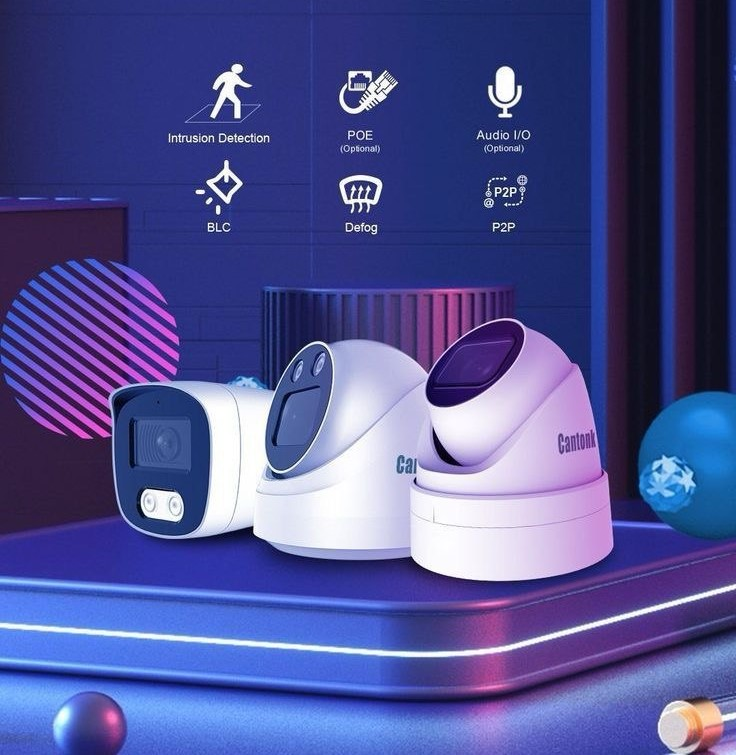

<section id="portfolio" class="portfolio">
    <div class="container aos-init" data-aos="fade-up">

      <div class="section-title">
        <h2>Portfolio</h2>
        <h3>Check our <span style="color: #128ea6;">Portfolio</span></h3>
        <!-- <p>Ut possimus qui ut temporibus culpa velit eveniet modi omnis est adipisci expedita at voluptas atque vitae autem.</p> -->
      </div>

      <div class="row aos-init" data-aos="fade-up" data-aos-delay="100">
        <div class="col-lg-12 d-flex justify-content-center">
          <ul id="portfolio-flters">
            <li data-filter="*" class="filter-active">All</li>
            <li data-filter=".filter-app">Cameras</li>
            <li data-filter=".filter-card">Serveres</li>
            <li data-filter=".filter-web">Networks</li>
          </ul>
        </div>
      </div>

     
      <div class="container aos-init" data-aos="zoom-in">

        <div class="row">
          <swiper-container dir="rtl" space-between="30" slides-per-view="6" free-mode="true">
            <swiper-slide role="group" aria-label="1 / 6" class="swiper-slide-active"
            style="width: 110px; margin-left: 30px;">
              <div >
                
              </div>
              </swiper-slide>
              <swiper-slide role="group" aria-label="1 / 6" class="swiper-slide-active"
              style="width: 110px; margin-left: 30px;">
                <div >
                  
                </div>
                </swiper-slide>

</swiper-container>          

 </div>
 </div>


    </div>
  </section>
